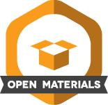

Submissions
Submission Preparation Checklist
As part of the submission process, authors are required to check off their submission’s compliance with all of the following items, and submissions may be returned to authors that do not adhere to these guidelines.
Pre-print uploaded to repository and assigned a DOI
Preregistration link accessible and included in manuscript
Preregistration deviations disclosed and discussed
Open Data, Materials, and Code accessible and linked in the manuscript; reasons for withheld data must be stated (e.g., ethical reasons such as privacy)
Instructions for reproducibility checks provided and linked in the manuscript
Article Types
Articles submitted to Replication Research need to investigate a research question that has been previously investigated in a published study or discuss replication methods that are relevant for at least two different research areas. Empirical reports can be computational reproductions using the same data and code, robustness checks using the same data but different procedures, close replications using new data and the same method, or conceptual replications using new data and a different method. Replication closeness needs to be described in detail.
Replications (different data)
Replication studies test a previously published claim or hypothesis using different data than the original study. They can be internal (i.e., by the same group of researchers), close, or conceptual (for a typology see Hüffmeier et al., 2016). Authors can use their own format or a standardized template provided by Replication Research. This Standardized Replication Template (StaRT) is available online at https://osf.io/3jgxd.
Upon acceptance, we expect authors to enter their replication study in to the FORRT Replication Database (if it is not included yet). StaRT reports can be imported automatically and do not require author assistance.
Reproductions (same data)
For reproductions (i.e., studies where no new data is collected), we recommend the use of the Institute4Replication’s template available via this OSF Project. We do not accept reproductions with overlapping authorship. Reproductions should expand the original analyses in some way (e.g., generalizability or robustness checks). Simply rerunning code is not sufficient.
Multiverse Analyses and Many Analyst Studies
There are many paths from raw data to results. Approaches that aim to wander most or all of them and compare how robust a finding is to analytic decisions are called multiverse analyses, approaches that involve many people choose their preferred path of data analysis independently and compare them are called Many Analyst Studies. Both contain information about the robustness or generalizability and are thus an integral part of repetitive research.
Multi-study articles
For multi-study articles, a mix of replications and reproductions is possible. If possible, authors should conduct a mini meta-analysis. Authors need to disclose for each study whether it is a replication or reproduction. A mix of original studies and replication is not possible.
Replication Methods
Theoretical contributions to methods of all types of replication reports can be submitted if they are relevant for multiple research areas.
Badges
For articles meeting the requirements listed in the Author Guidelines, we assign the following badges (images provided by OSF):

Student Reports
Articles whose first authors are enrolled at a university at the time of submission can be submitted as Student Report. Submissions need to include a certificate of enrollment at a university for the first author. None of the other authors need to be students. Supervisors do not need to be included as authors but need to be mentioned in the manuscript. Review for student reports is aimed to be faster (two weeks deadline for one review instead of four weeks for two independent reviews). Quality standards are as high as non-student reports. Reviews are still open and articles need to adhere to submission guidelines and TOP guidelines. Please note that students can also submit their articles as non-student reports.
Registered Reports
Replication Research accepts registered reports for studies where new data is collected. More information on registered repots is available in the template guide provided by the OSF.
Reports that are already part of a Meta-Study
A considerable proportion of replications have been conducted as part of a large-scale project (e.g., Reproducibility Project Psychology). In these cases, only the meta-study is reviewed and not the individual articles. Replication Research accepts manuscripts that describe an individual replication even if it has already been part of a published meta-study provided that the manuscript transparently describes the relationship with the specified meta-study.
Contributions and References
These guidelines are shared under a CC 4.0 by Attribution License and are loosely based on the submission guidelines from Meta Psychology (https://open.lnu.se/index.php/metapsychology/about/submissions). For a recommended citation, please see https://osf.io/kupqt/.